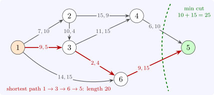

8.3 Maximum flows and minimum cuts
In the maximum-flow problem, the arcs have capacities only, and the aim is to send as much as possible from a source \(s\) to a sink \(t\). An \(s\)–\(t\) cut is a set \(S\) of nodes containing \(s\) but not \(t\); its capacity \(u(S)\) is the total capacity of the arcs from \(S\) to its complement. Every unit of flow must cross every cut, so the value of any flow is at most the capacity of any cut. The remarkable fact is that the bound is attained.
Theorem 8.3.1 (Max-flow min-cut; Ford and Fulkerson, 1956). The maximum value of an \(s\)–\(t\) flow equals the minimum capacity of an \(s\)–\(t\) cut.
Proof. Given a flow \(x\), the residual network has an arc \((i, j)\) with capacity \(u_{ij} - x_{ij}\) wherever that is positive, and a reverse arc \((j, i)\) with capacity \(x_{ij}\) wherever \(x_{ij} > 0\) (flow that may be cancelled). If the residual network contains a path from \(s\) to \(t\), an augmenting path, pushing the smallest residual capacity \(\delta > 0\) along it gives a feasible flow of value larger by \(\delta \); so at a maximum flow there is none. Let \(S\) be the set of nodes reachable from \(s\) in the residual network of a maximum flow; then \(t \notin S\). Every arc from \(S\) to its complement is saturated, \(x_{ij} = u_{ij}\), and every arc into \(S\) carries no flow, since otherwise its end outside \(S\) would be reachable. So the net flow across the cut, which equals the flow value, is exactly \(u(S)\). (That a maximum flow exists follows from compactness, or constructively from the Edmonds–Karp rule below.) □
The proof is an algorithm: start from zero flow and augment until no augmenting path remains. With integer capacities each augmentation adds at least \(1\), so the method terminates with an integral maximum flow. Choosing a shortest augmenting path at each step, by breadth-first search (Edmonds and Karp, 1972), bounds the number of augmentations by \(O(nm)\) whatever the capacities. The theorem is also an instance of LP duality: the dual of the maximum-flow LP is an LP whose integral solutions are cuts. It has many combinatorial consequences, among them König’s theorem on bipartite matchings used in the Hungarian method.
Example 8.3.2. Figure 7 shows a network with six nodes. With the first number on each arc as its length, the shortest path from \(1\) to \(5\) is \(1 \to 3 \to 6 \to 5\), of length \(9 + 2 + 9 = 20\). With the second number as its capacity, the maximum flow from \(1\) to \(5\) is \(25\), and the cut \(S = \{1, 2, 3, 4, 6\}\), whose outgoing arcs \((4, 5)\) and \((6, 5)\) have capacities \(10 + 15 = 25\), proves it (Software 8.6.1, 8.6.2).

Questions on this section
Stuck on something here? Ask below and it stays attached to this topic.